Abra o Tinkercad e crie um Projeto 3D
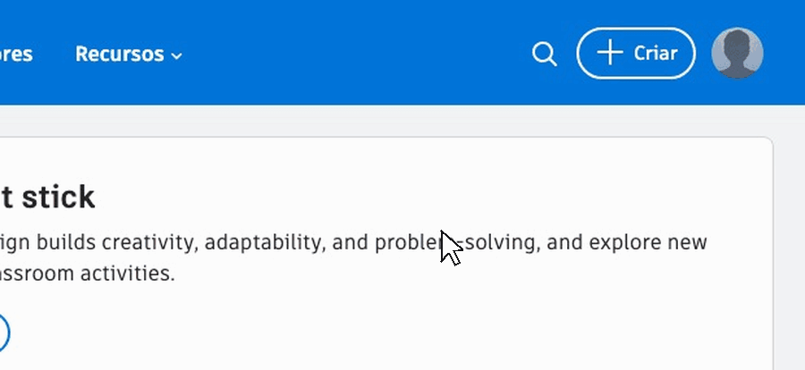
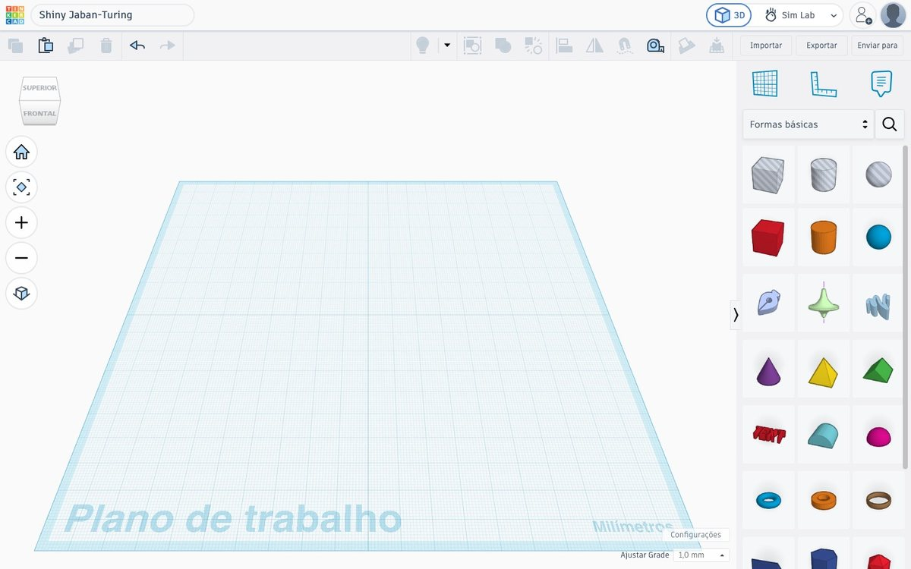
O clipe repete sozinho. Repare onde o cursor vai antes de clicar.
Foto da tela.
Entre no Tinkercad com a sua conta. No canto de cima à direita, clique em + Criar e, na primeira linha, em Projeto 3D.
Abre o editor com o plano azul quadriculado vazio e um nome sorteado — deixe assim, no último passo você troca.
- Não sei entrar
- Chame o professor. Não crie conta nova: os seus projetos estão na antiga.
- Abriu outra coisa
- Volte com a seta ⟵ do navegador e clique de novo em + Criar, escolhendo a primeira linha.
- A tela ficou branca
- O Tinkercad é pesado. Espere até meio minuto. Se continuar branca, recarregue com F5.
Arraste um Cilindro para o plano
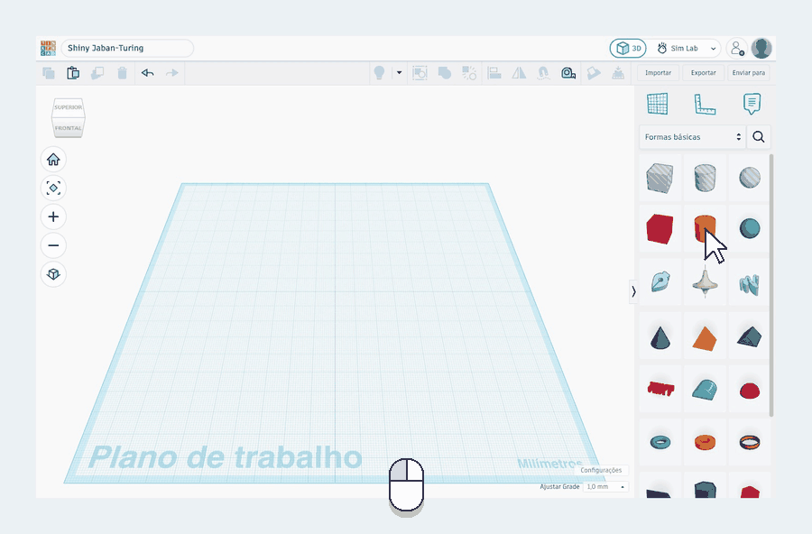
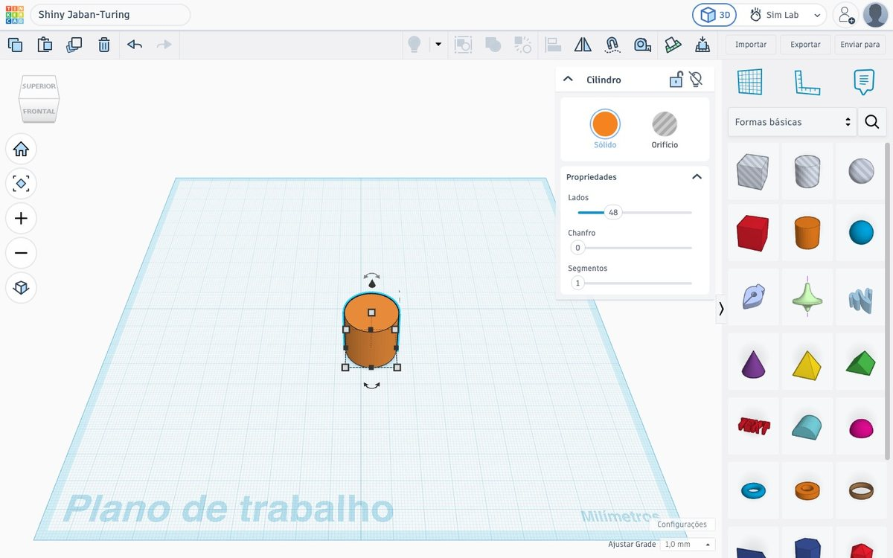
O clipe repete sozinho. Repare onde o cursor vai antes de clicar.
Foto da tela.
Na coluna da direita, a forma laranja do meio da segunda fileira é o Cilindro. Arraste-a até o meio do plano e solte.
É o corpo do foguete.
- Peguei o cilindro cinza listrado
- Esse é o buraco. Aperte Delete e arraste o laranja.
Corpo 20 × 20 × 50, pelas alças
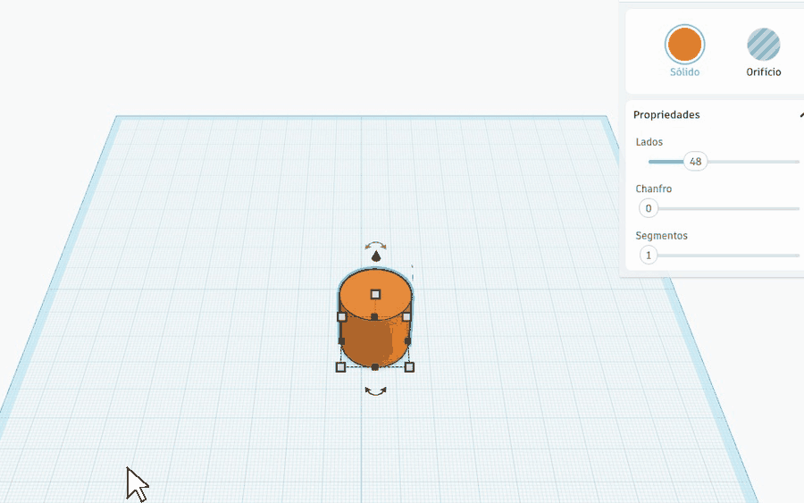
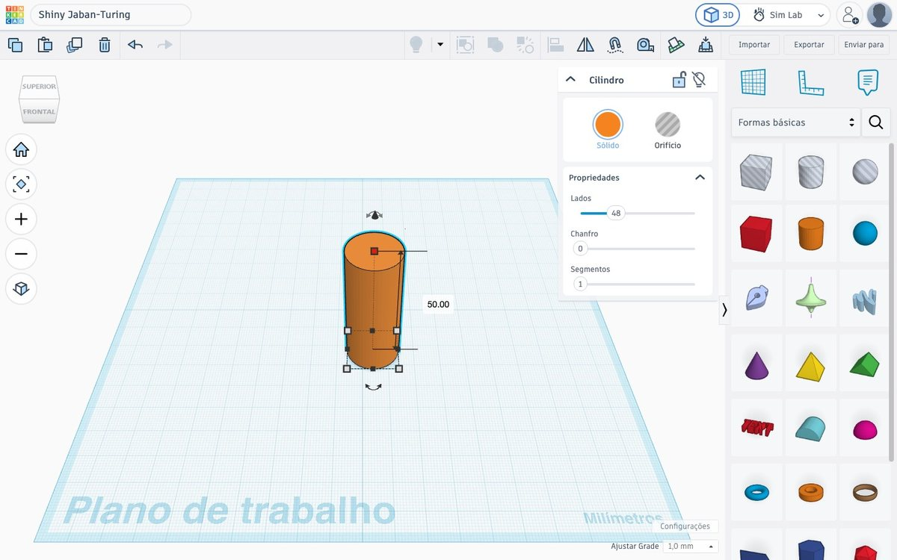
O clipe repete sozinho. Repare onde o cursor vai antes de clicar.
Foto da tela.
O cilindro não tem campo de medida (Aula 2): use as alças. Clique na alça do canto de cima à esquerda; no número da esquerda escreva 20 e Enter, no de cima escreva 20 e Enter. Depois clique na alça do meio da tampa e escreva 50 no número da altura.
O corpo fica fino e alto.
- O número ficou estranho
- Clique no número, aperte Ctrl + A (no Mac, Cmd + A) e escreva de novo.
- Os números sumiram
- Clique no cilindro e na alça do canto de novo.
Solte o Cone na tampa do corpo
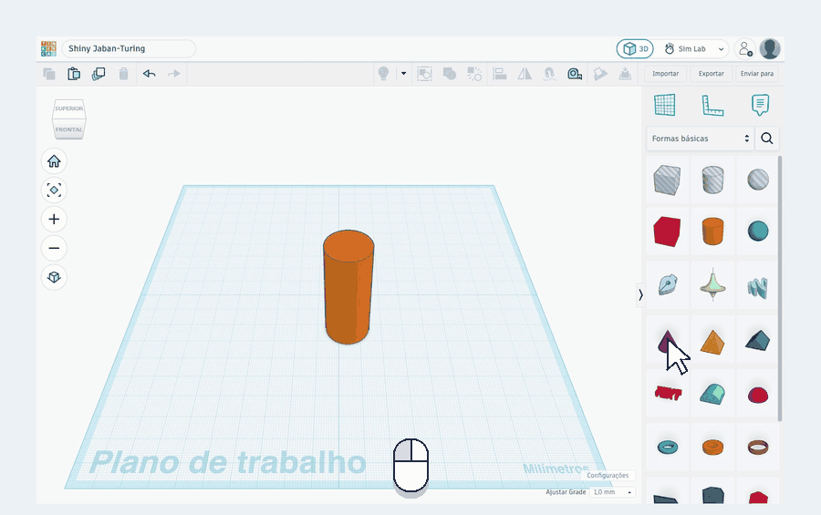
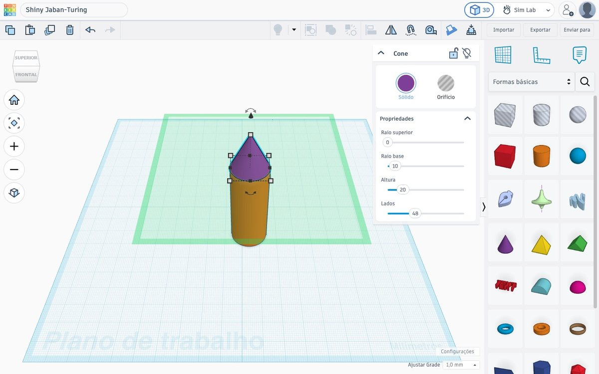
O clipe repete sozinho. Repare onde o cursor vai antes de clicar.
Foto da tela.
Na coluna da direita, na fileira da pirâmide, o cone roxo com o nome Cone. Segure o botão esquerdo nele e solte bem no meio da tampa do corpo.
O cone nasce em cima do corpo, e aparece o quadrado verde: o plano de trabalho foi para o alto da peça. O cone nasce centrado na tampa — por isso não é preciso alinhar.
- Não acho o Cone
- Fica na fileira da pirâmide amarela: é o roxo.
- O cone caiu no chão
- Você soltou fora do corpo. Arraste-o de novo para a tampa.
Ponta 20 × 20 × 20, pelas alças
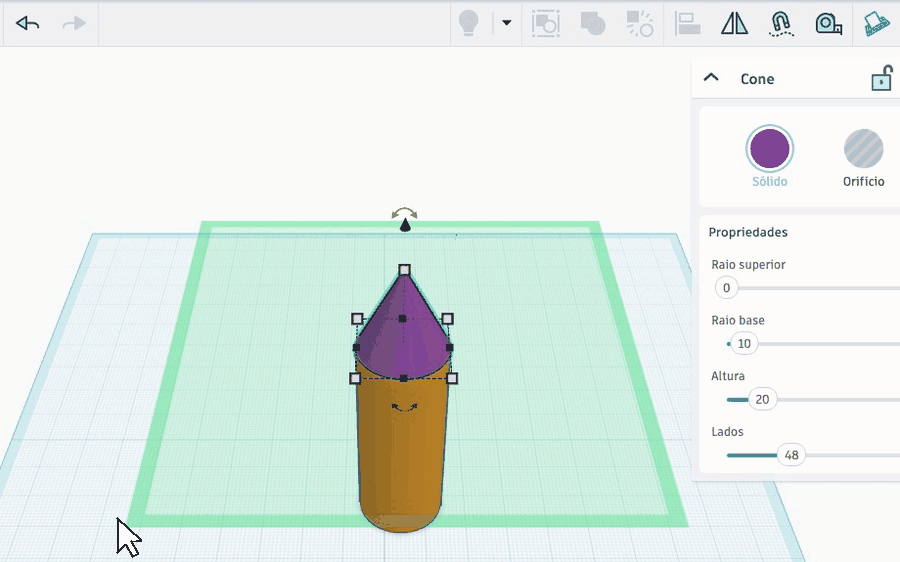
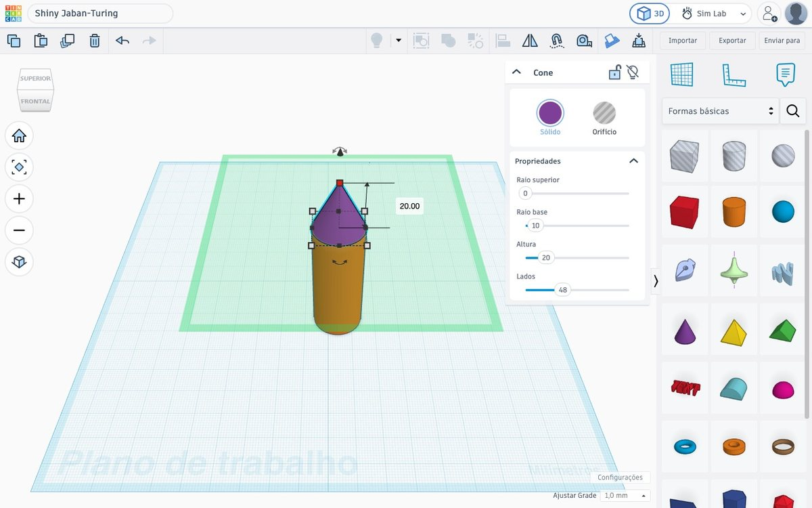
O clipe repete sozinho. Repare onde o cursor vai antes de clicar.
Foto da tela.
Clique na alça do canto da base do cone; escreva 20 nos dois números da base. Depois clique na alça do meio da ponta e escreva 20 na altura.
A base do cone tem a mesma largura do corpo e a ponta fica com 20 mm de altura: o foguete está de cabeça feita.
- O cone ficou largo demais
- Volte à alça do canto e escreva 20 nos dois números.
- Sumiu a ponta
- Você mexeu na altura do corpo. Aperte Ctrl + Z e refaça só o cone.
Arraste uma Caixa: a aleta
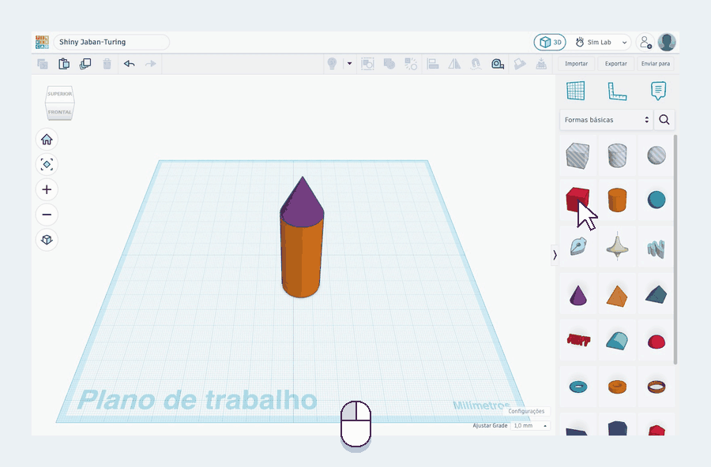
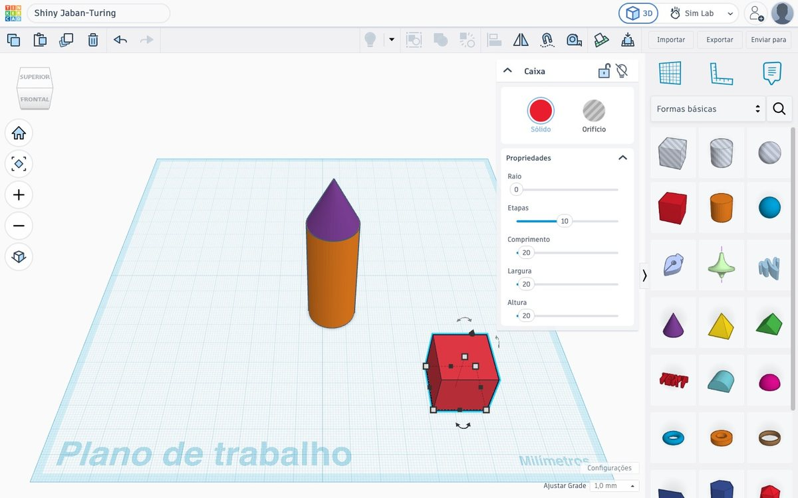
O clipe repete sozinho. Repare onde o cursor vai antes de clicar.
Foto da tela.
Clique num lugar vazio do plano. Arraste uma Caixa vermelha da coluna da direita e solte no plano, à direita do foguete, longe dele.
Essa caixa vai virar uma tira que atravessa o corpo: uma peça só que dá duas aletas.
- A caixa caiu em cima do foguete
- Arraste-a de novo para o plano, longe dele.
- Peguei a caixa cinza listrada
- Essa é o buraco. Aperte Delete e pegue a vermelha.
Aleta: Comprimento 6, Largura 40, Altura 16
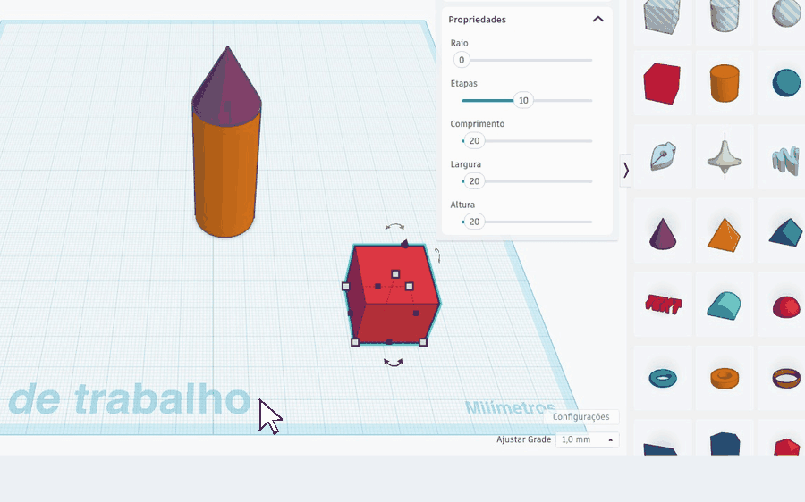
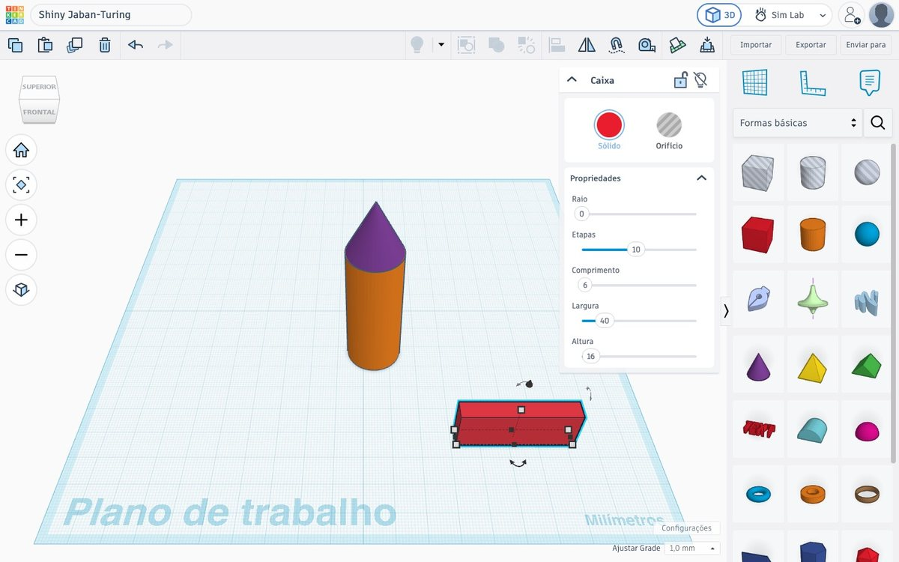
O clipe repete sozinho. Repare onde o cursor vai antes de clicar.
Foto da tela.
No painel, escreva 6 em Comprimento, 40 em Largura e 16 em Altura (Enter depois de cada).
É uma tirinha: comprida de lado a lado (40 mm), fina de frente para trás (6 mm) e baixa (16 mm).
- A tira ficou virada
- O 40 tem de estar em Largura, e não em Comprimento.
- Digitei e nada mudou
- Falta o Enter depois de cada número.
Escolha o corpo e a aleta: clique e Shift + clique
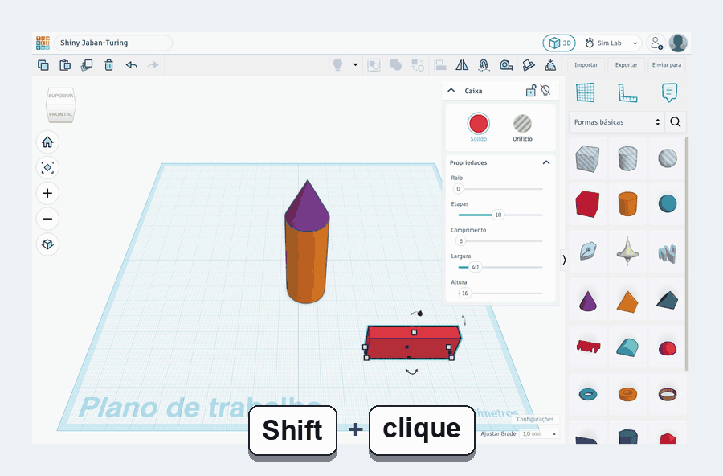
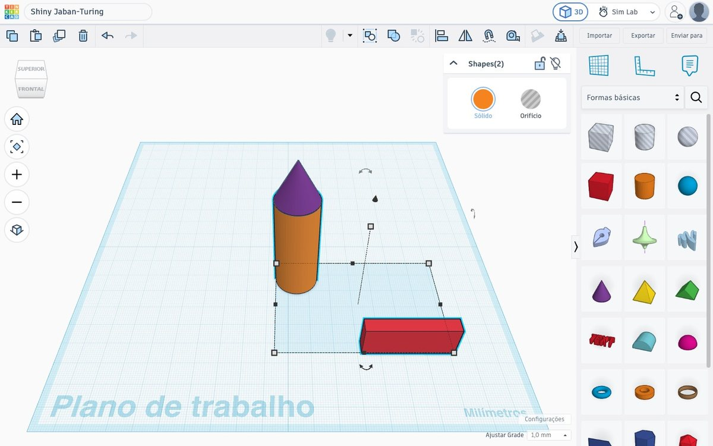
O clipe repete sozinho. Repare onde o cursor vai antes de clicar.
Foto da tela.
Clique num lugar vazio do plano. Clique no corpo do foguete (o laranja). Agora segure Shift e clique na aleta (a tira vermelha).
O Shift junta a segunda peça à seleção. O cone fica de fora: só o corpo e a aleta.
- O painel diz Shapes(3)
- O cone entrou. Clique num lugar vazio e refaça: primeiro o corpo, depois Shift + clique na aleta.
- Só a aleta ficou selecionada
- Você soltou o Shift antes do clique, ou não clicou no corpo primeiro. Refaça.
Abra o Alinhar
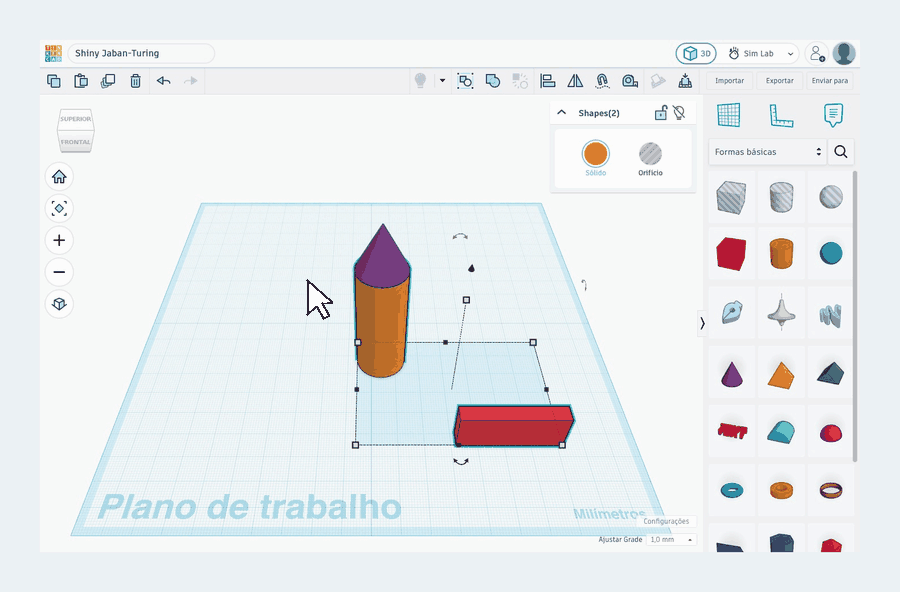
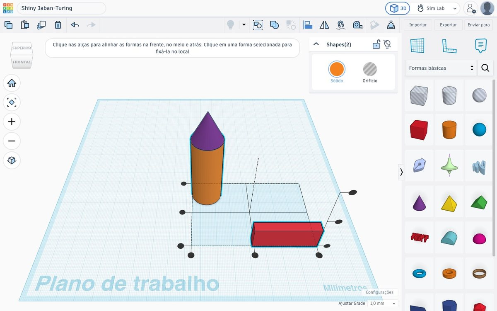
O clipe repete sozinho. Repare onde o cursor vai antes de clicar.
Foto da tela.
Na barra de cima, clique no botão Alinhar (o ícone de linhas de tamanhos diferentes, ao lado do espelho). Aparecem as bolinhas pretas em volta do corpo e da aleta.
- As bolinhas não apareceram
- O Alinhar só abre com duas ou mais peças selecionadas. Volte ao passo 8.
FIXE o corpo: clique nele
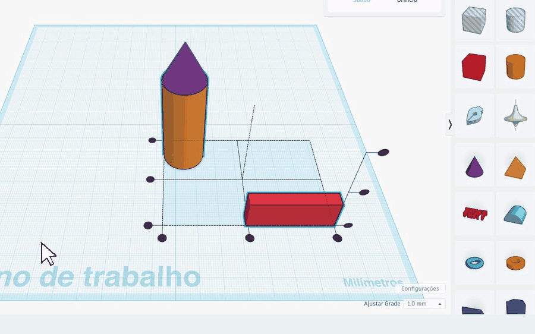
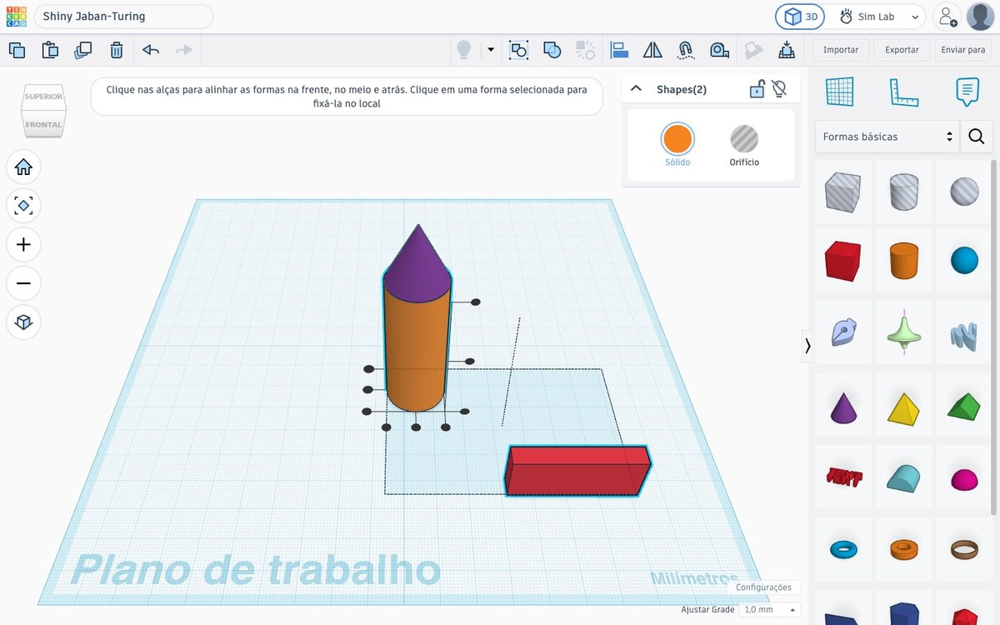
O clipe repete sozinho. Repare onde o cursor vai antes de clicar.
Foto da tela.
Clique em cima do corpo laranja do foguete: ele fica fixo e só a aleta vai andar.
- A seleção sumiu
- Você clicou fora do corpo. Aperte Ctrl + Z e refaça os passos 8 a 10.
Centro em X: a bolinha do meio, embaixo
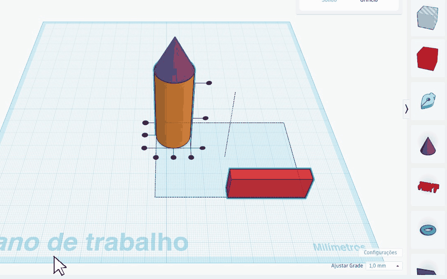
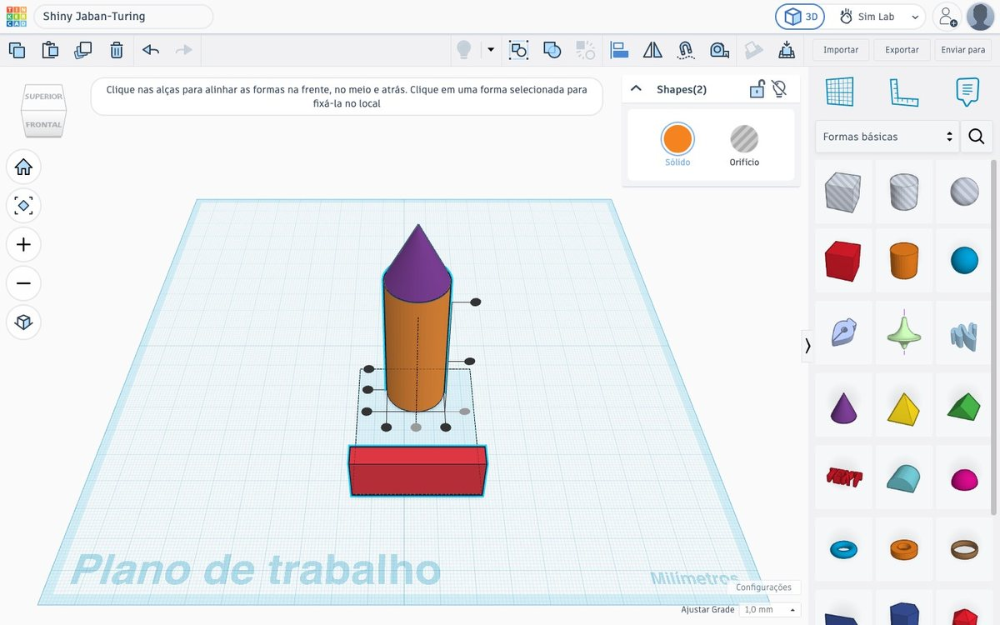
O clipe repete sozinho. Repare onde o cursor vai antes de clicar.
Foto da tela.
Clique na bolinha do meio da fileira de baixo. A tira desliza e se centra no corpo, da esquerda para a direita.
- O corpo andou
- Você não fixou o corpo. Aperte Ctrl + Z e volte ao passo 10.
Centro em Y: a bolinha do meio, à esquerda
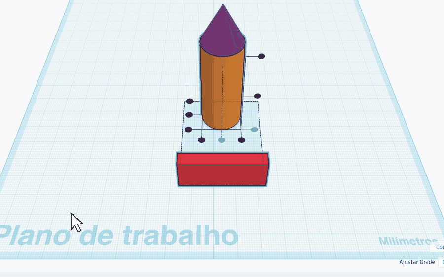
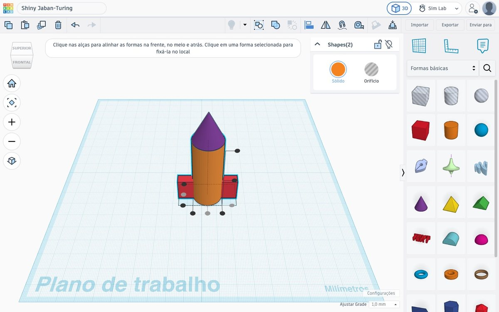
O clipe repete sozinho. Repare onde o cursor vai antes de clicar.
Foto da tela.
Clique na bolinha do meio da coluna da esquerda. A tira atravessa o corpo pelo meio, de frente para trás, e aparece dos dois lados: já são duas aletas.
Não precisa alinhar a altura: a tira já nasceu no chão, na mesma base do corpo. Aperte Esc para fechar o Alinhar.
- A tira está na frente do corpo
- Faltou este passo: clique na bolinha do meio da coluna da esquerda.
- Sobrou o Alinhar na tela
- Aperte Esc.
Clique na aleta e aperte Ctrl + D
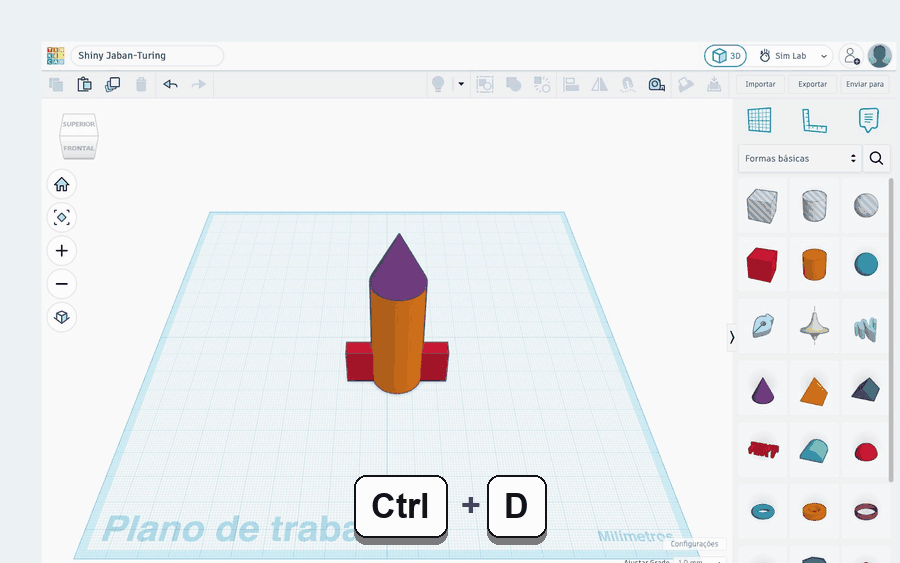
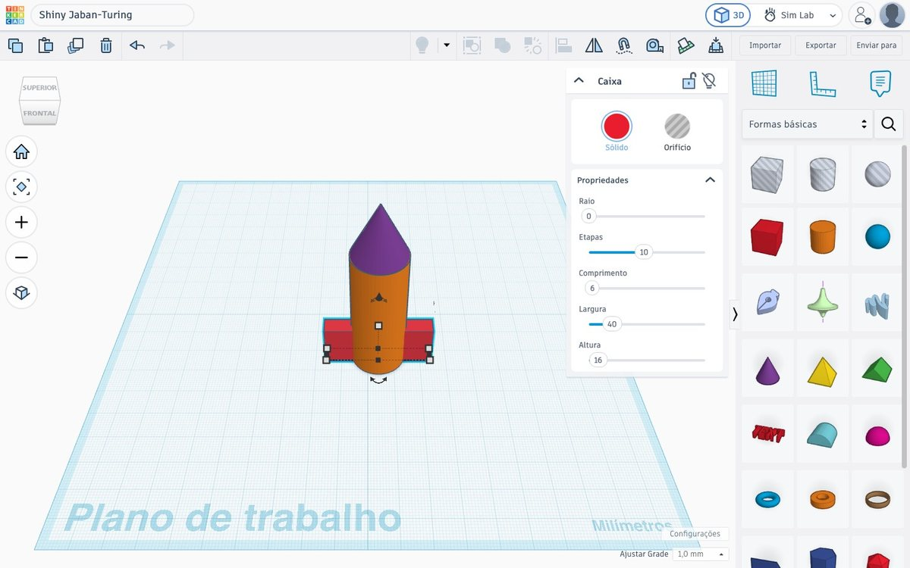
O clipe repete sozinho. Repare onde o cursor vai antes de clicar.
Foto da tela.
Clique numa ponta da tira (a parte vermelha que sai do corpo): só a tira fica selecionada. Aperte Ctrl + D (Mac: Cmd + D).
Nada muda na tela: nasceu uma cópia da tira, em cima da original, e é ela que fica selecionada.
- Selecionou o corpo
- Você clicou no laranja. Clique na ponta vermelha da tira.
- Não sei se copiou
- Aperte Ctrl + Z: se a tira sumir, é porque tinha copiado. Aperte Ctrl + Y e siga.
Gire a cópia 90°: a seta curva de baixo
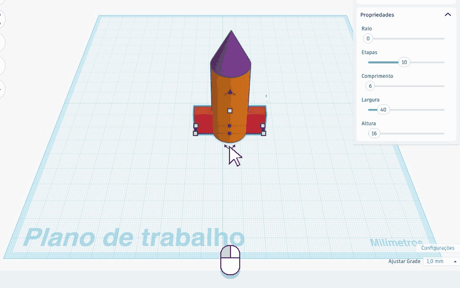
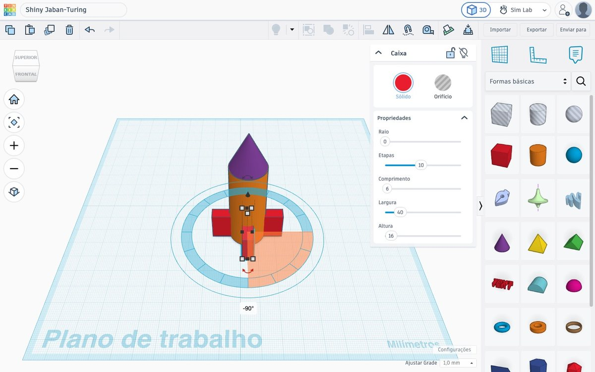
O clipe repete sozinho. Repare onde o cursor vai antes de clicar.
Foto da tela.
Embaixo da tira há uma seta curva pequena. Segure o botão esquerdo nela e arraste em volta do foguete, num arco, subindo para a direita, até o transferidor mostrar 90° (ou −90°). Solte.
A cópia gira como uma porta e atravessa o corpo pelo outro lado: com a tira de antes, já formam uma cruz — quatro aletas.
- O transferidor trava em 40 ou 50
- Você está arrastando em linha reta. Faça um arco, como se desenhasse o pedaço de um círculo em volta do foguete.
- Passou de 90
- Continue arrastando até voltar ao número certo, ou aperte Ctrl + Z e recomece.
Selecione tudo: Ctrl + A
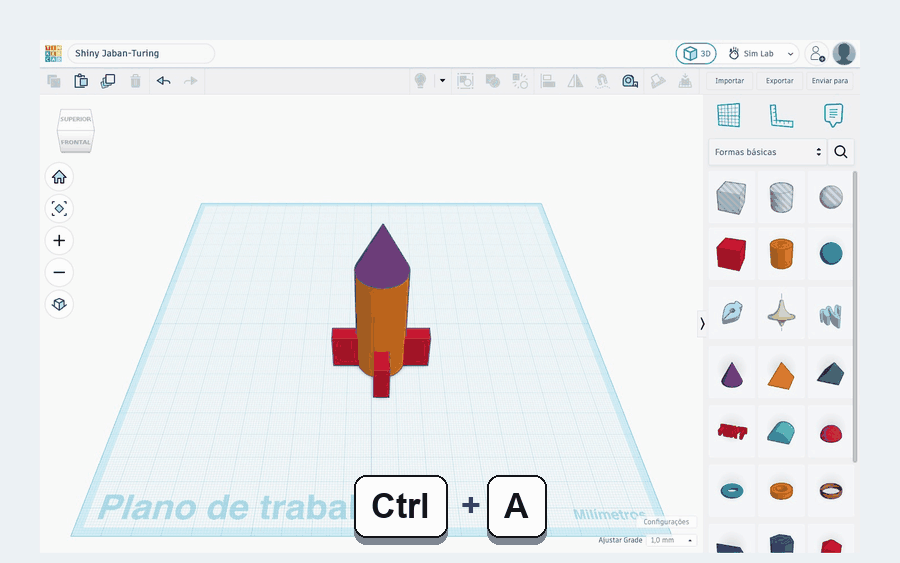
O clipe repete sozinho. Repare onde o cursor vai antes de clicar.
Foto da tela.
Clique num lugar vazio do plano, segure Ctrl e aperte A (Mac: Cmd + A). O corpo, o cone e as duas tiras ficam selecionados: Shapes(4).
- O painel diz Shapes(3)
- Faltou uma peça. Clique num lugar vazio e aperte Ctrl + A de novo.
Agrupe: Grupo de união
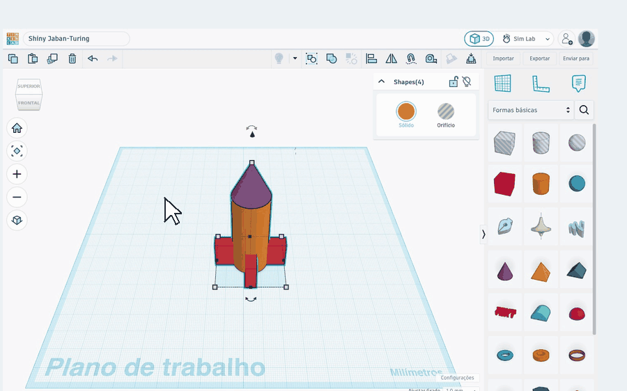
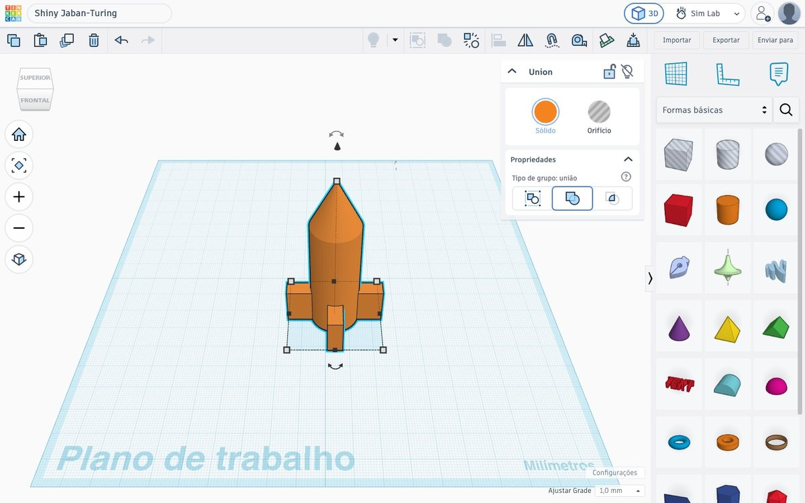
O clipe repete sozinho. Repare onde o cursor vai antes de clicar.
Foto da tela.
Na barra de cima há três botõezinhos de juntar peças, à direita do meio. Clique no do meio, o Grupo de união.
O foguete vira uma peça só, toda da mesma cor: o painel diz Union.
- O painel não mudou
- Clique no botão do meio dos três, o Grupo de união.
- Sumiu o cone
- O cone não encostava no corpo. Desagrupe com Ctrl + Shift + G e confira o passo 4.
Olhe de cima: a cruz
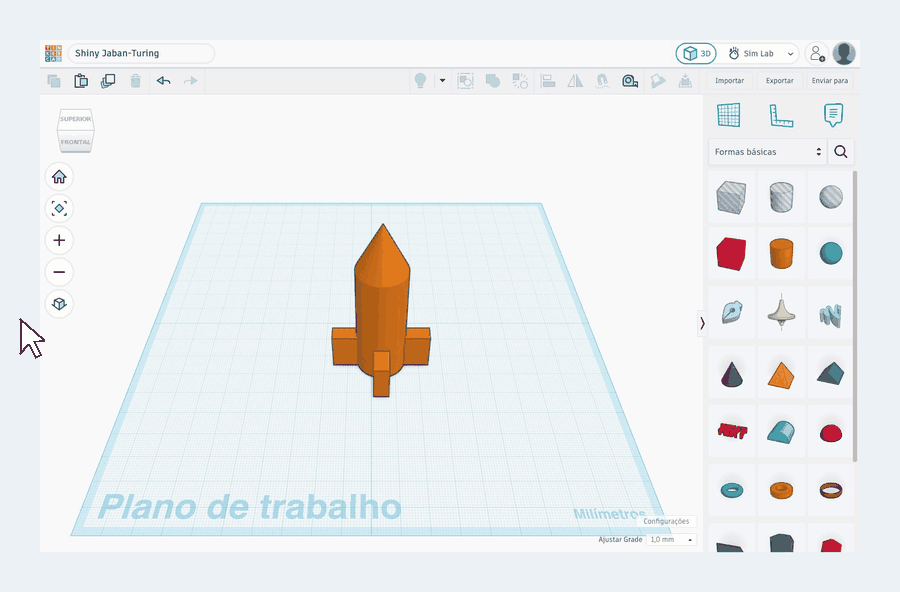
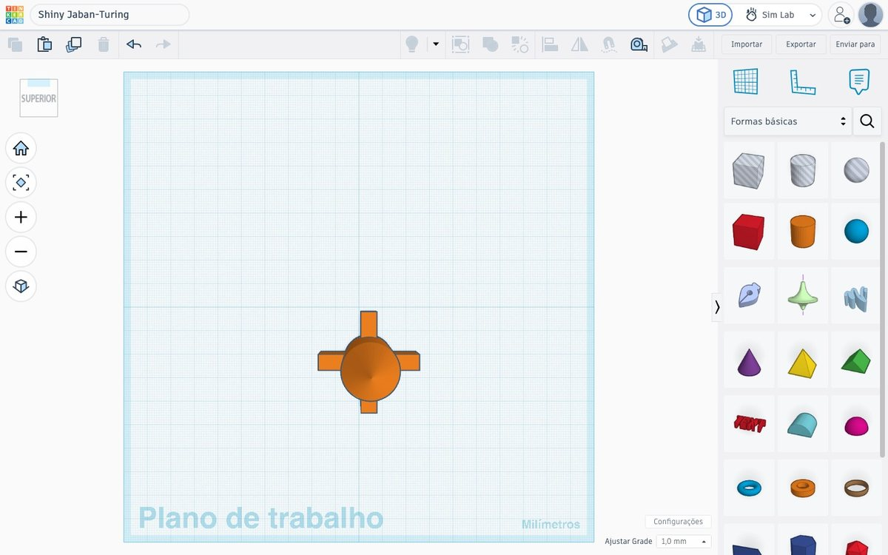
O clipe repete sozinho. Repare onde o cursor vai antes de clicar.
Foto da tela.
Clique num lugar vazio do plano. No cubo de vistas, no canto de cima à esquerda, clique na face escrita SUPERIOR.
De cima se vê uma cruz: o corpo redondo no meio e as quatro aletas saindo para os lados.
- A câmera não mudou
- Clique na palavra SUPERIOR do cubinho.
- Só vejo duas aletas
- A cópia não foi girada. Volte ao passo 14.
Olhe de frente: o foguete de pé
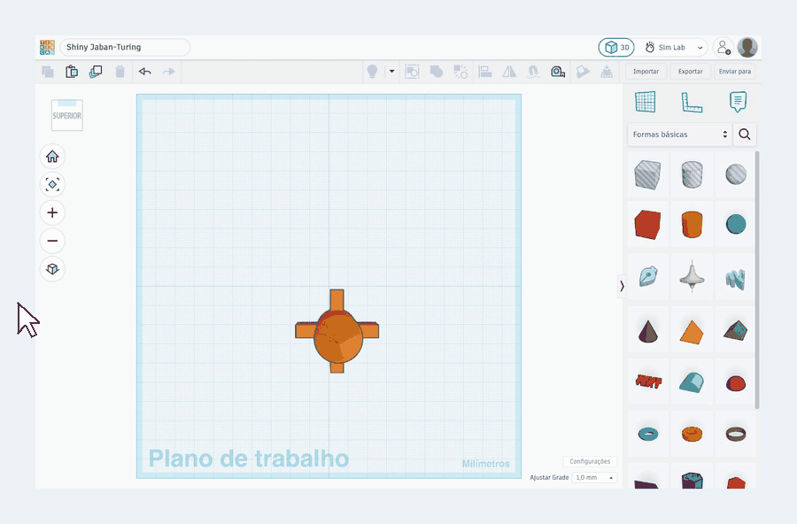
O clipe repete sozinho. Repare onde o cursor vai antes de clicar.
Foto da tela.
No mesmo cubo de vistas, clique na face escrita FRONTAL.
De frente se vê o foguete de pé: a ponta, o corpo e as aletas na base, rentes ao chão.
- A câmera não mudou
- Clique na palavra FRONTAL do cubinho.
Dê um nome ao seu projeto
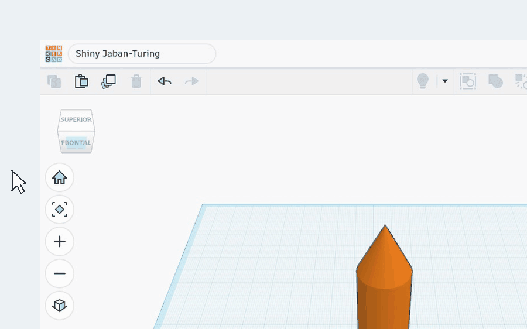
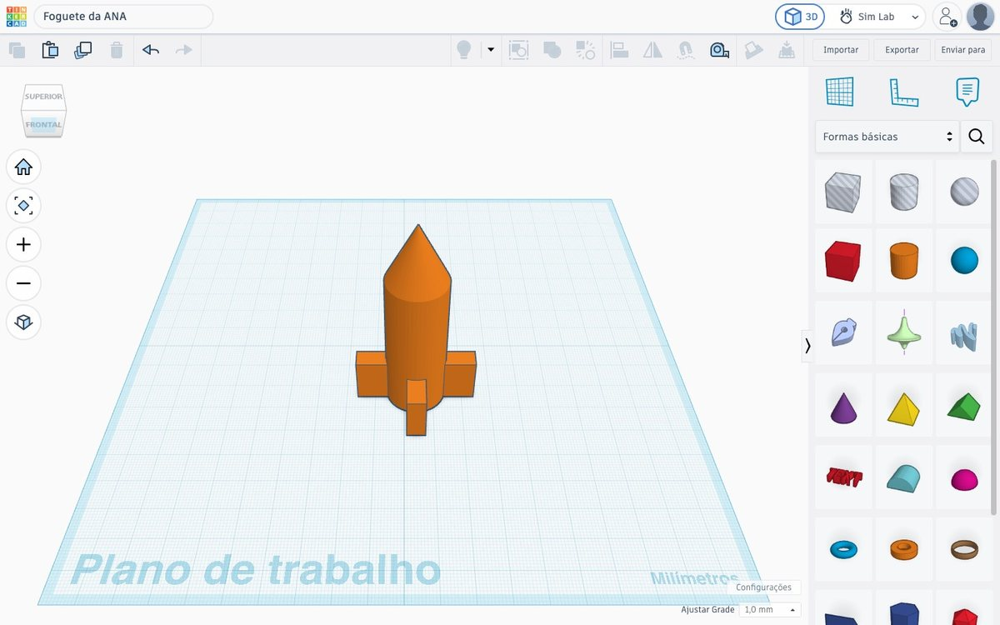
O clipe repete sozinho. Repare onde o cursor vai antes de clicar.
Foto da tela.
Clique na casinha da barra da esquerda para voltar à vista inicial. Depois clique no nome do projeto, no canto de cima à esquerda, apague, escreva Foguete da ANA (ou o seu nome) e aperte Enter.
O Tinkercad salva sozinho. O foguete está guardado na sua conta.
- O nome não mudou
- Falta o Enter.
- O campo não abriu
- Clique em cima das letras do nome.